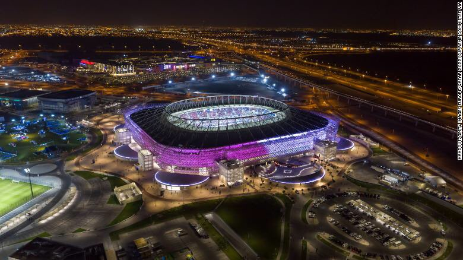
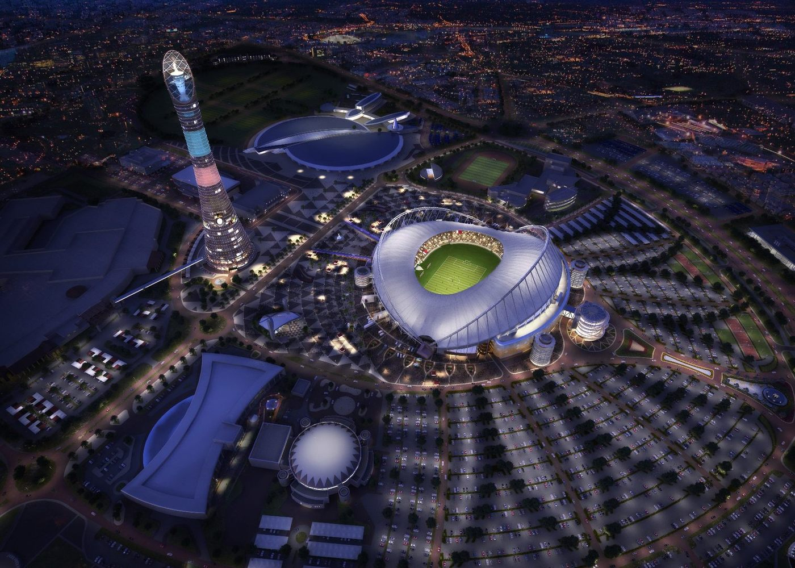
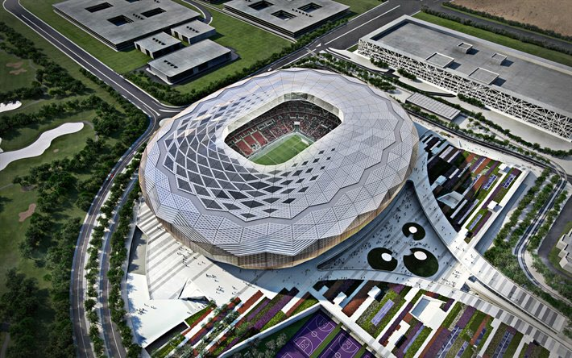
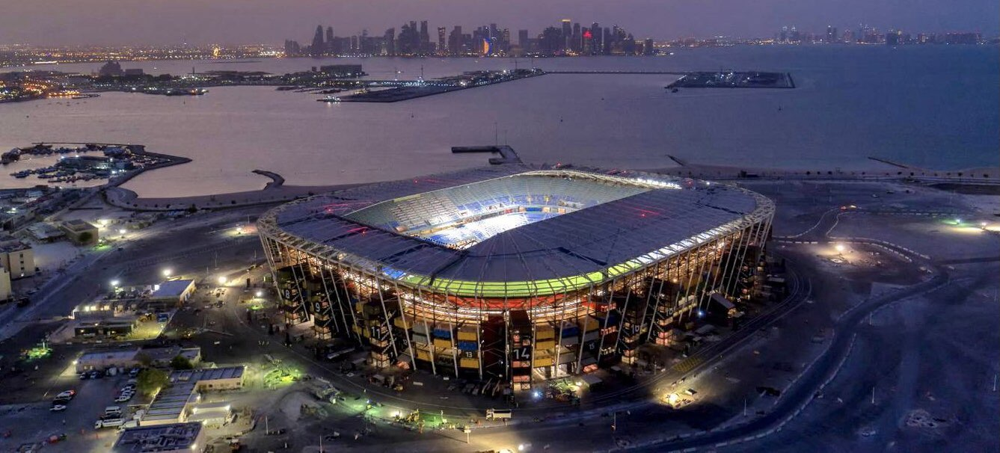
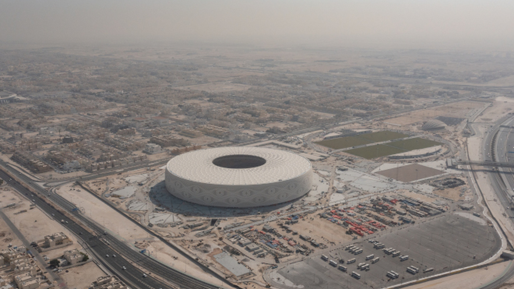

0
0

Lusail Stadium
Located in Lusail City
Read More The Lusail Iconic Stadium is located in Lusail city and it is the biggest stadium amongst all arenas in Qatar. It was built in April 2021 and will seat 80,000 spectators. The stadium will host the opening and final games of the 2022 FIFA World Cup. Lusail city is being developed as part of Qatar 2030 vision, but it is expected to accommodate 450,000 people.
Al Bayt Stadium
Located in Al Khor city
Read More The Al Bayt Stadium is a retractable roof football stadium located in Al Khor city and it is the second largest stadium after Lusail. It is confirmed to host the first match scheduled for November 21st with 60,000 spectators. The municipality lies in the northeast coast of Qatar and it is considered to be one of the major cities.
Al Janoub Stadium
located in the town of Al Wakrah
Read More Al Janoub Stadium is located in the town of Al Wakrah. It was opened on May 16, 2019, and has a capacity of 40,000. The planning for Al Janoub stadium started in 2013 as part of Qatar's bid to host the World Cup. The design of the stadium was inspired by the hulls of the traditional dhow pearl fishing boats.

Ahmad Bin Ali Stadium
Located in Al Rayyan
Read More The construction of the new stadium started in early 2016. Al Rayyan, where Ahmad Bin Ali Stadium is located, is known for its love of traditions and local culture, as well as its hugely popular football team, Al Rayyan Sports Club. The close-knit community here is deeply committed to the team, whose new arena will host up to 40,000 fans at FIFA World Cup 2022™ matches through to the quarter-final stage.

Khalifa International Stadium
located in Doha, Qatar
Read More Khalifa International Stadium located in Doha, has a total capacity of 40,000 seats. Qatar was awarded the 2022 World Cup back in 2010 and has provided extensive upgrades to the stadium, making it the first of the venues to be completed with a 4-start sustainability rating.

Education City Stadium
located on the outskirts
of Doha

Ras Abu Aboud Stadium
located in Doha, Qatar.
Read More Recently opened on November 30th, 2021, its capacity holds 40,000, located in Doha, Qatar. This stadium was designed to contain 974 recycled shipping containers in honor to the site’s industrial history. It is also the first temporary venue in FIFA World Cup history that will later be dismantled to provide assistance to under-developed countries in Africa.

Al Thumama Stadium
located in Al Thumama Bus Stop 7
Read More This stadium can hold up to 40,000, located in Al Thumama Bus Stop 7, Qatar. Because of the 49th Amir Cup Final on October 22, 2021, Al Thumama Stadium was opened as an inauguration. The stadium’s design reflects that of gahfiya- a traditional woven cap, worn by all men.